DAYS
3天 2 晚
Demo Gallery · v0.8.2:把 5 份真实旅行需求丢进 /studio,从空表单到结构化路书、视觉模板切换、最终成片,一条不落。
截图全部由 scripts/demo-5-roadbooks.js 真实驱动 Playwright 抓取,可直接转发给团队评审。
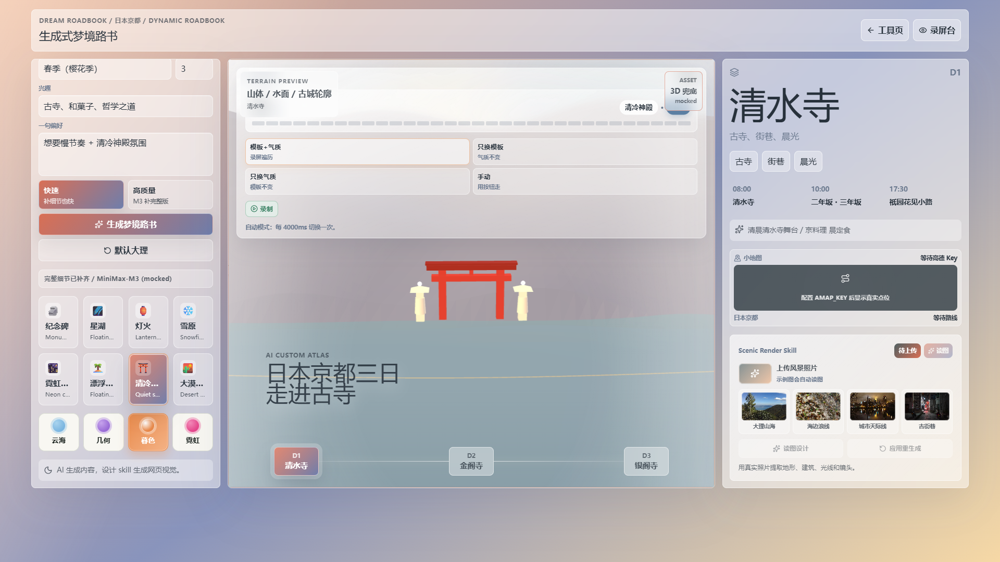
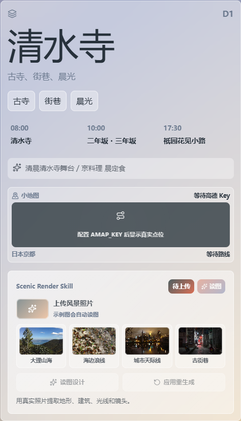
一句话需求 "京都三日慢节奏,想看古寺和菓子" → M3 输出三座"精神城市":
东山的人间烟火、北山的金阁静谧、东山的哲学回声。
SHRINE 模板把视觉拉到山门石阶、晨雾、宝塔剪影,与"慢节奏文化爱好者"的人设天然契合。
"我不需要一份攻略,我需要一份能让我慢下来、按节奏走的京都。"
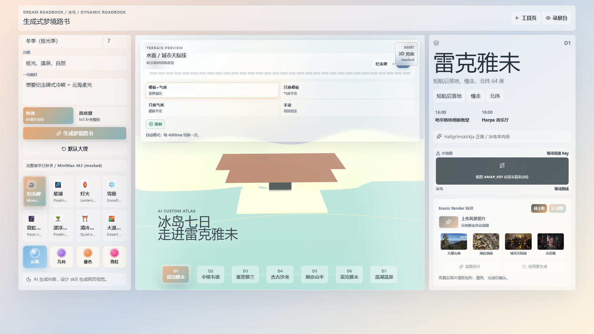
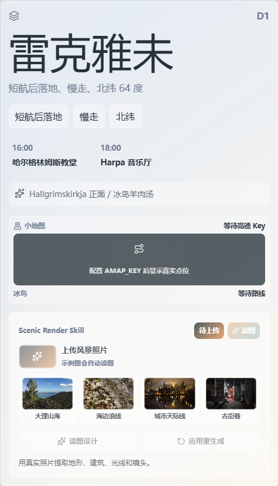
"冰岛 7 天,自然 + 温泉型旅行者" → M3 把 7 天拆成 7 段质感差异极强的节奏:
首都慢走 → 黄金圈 → 黑沙滩 → 冰河湖 → 草帽山 → 极光 → 蓝湖收尾。
STARLAKE 模板把深紫底色 + 镜面湖面 + 星点拉满,跟"极光"叙事一秒对上。
"环岛路线难的不是开车,是怎么在 7 天里把南海岸的天气和极光窗口都装下。"
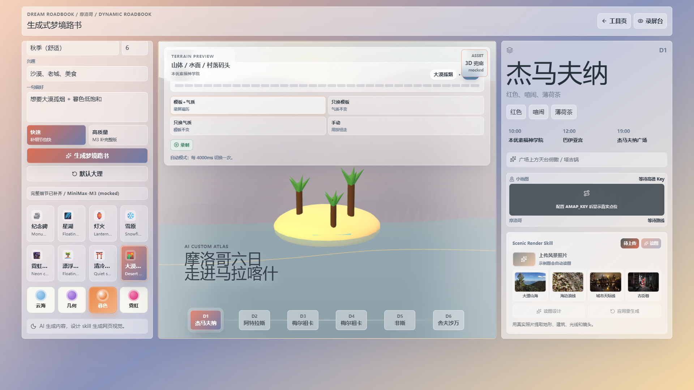
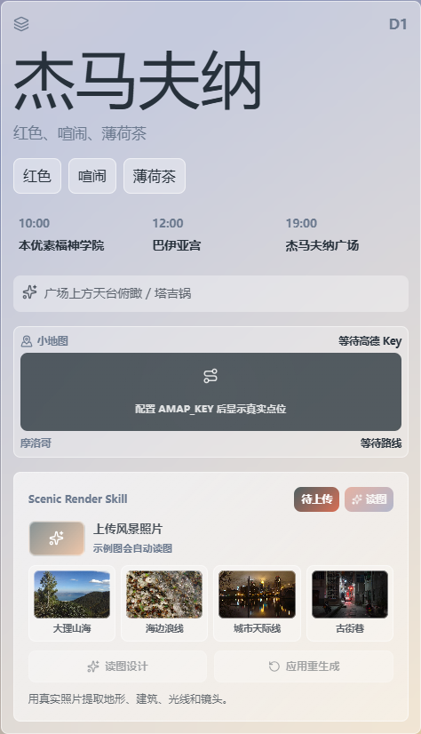
"摩洛哥 6 天 5 晚,沙漠 + 老城型" → M3 把红城、土堡、撒哈拉一夜、皮革染缸、蓝色小镇串成 6 个反差强烈的画面。
DESERT 模板的低多边形沙丘 + 暖色夕光,与"撒哈拉一夜"段落完全共振;在 Morocco 演示里还手动切到 STARLAKE 模板做了一次世界观对比。
"撒哈拉不只是一晚沙漠,它的白天和星空,是两个完全不同的路书节奏。"
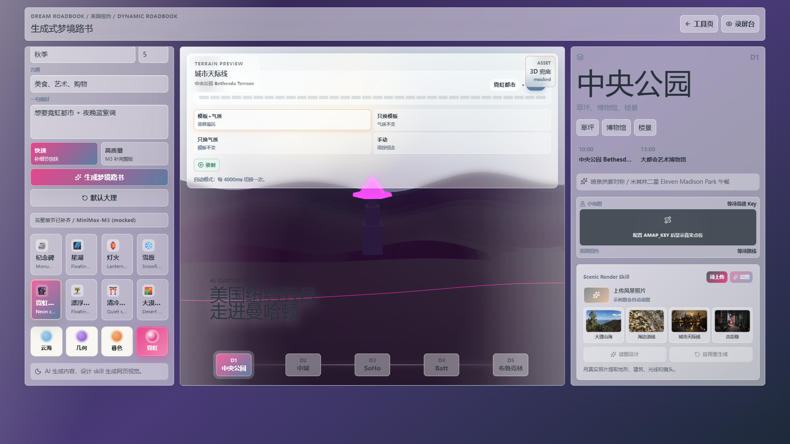
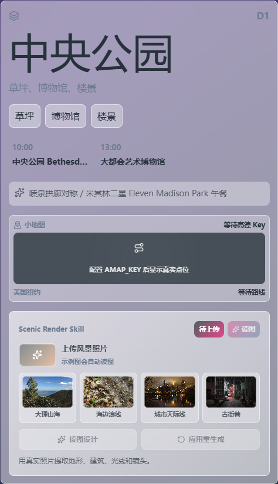
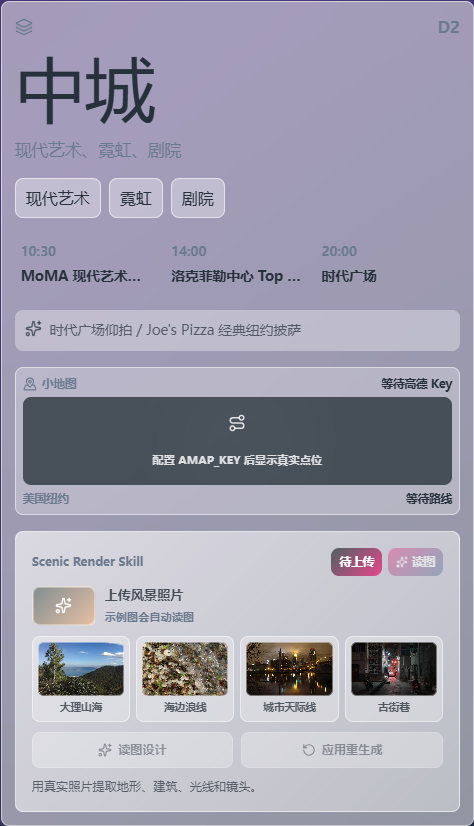
"纽约 5 天 4 晚,快节奏美食 + 艺术型" → M3 把中央公园、MoMA、SoHo、自由女神、布鲁克林按"白天 vs 夜晚"切对仗。
NEON CITY 模板的紫色霓虹 + 楼宇方块,跟时代广场、布鲁克林夜景一拍即合。
Day 2 单独抓了 detail 截图,验证停留时长 / 拍照机位 / 美食建议三项在单日视图里都成立。
"城市节奏的密度比城市数量更关键,5 天里我把 MoMA 留了半天,SoHo 留了 1.5 天。"
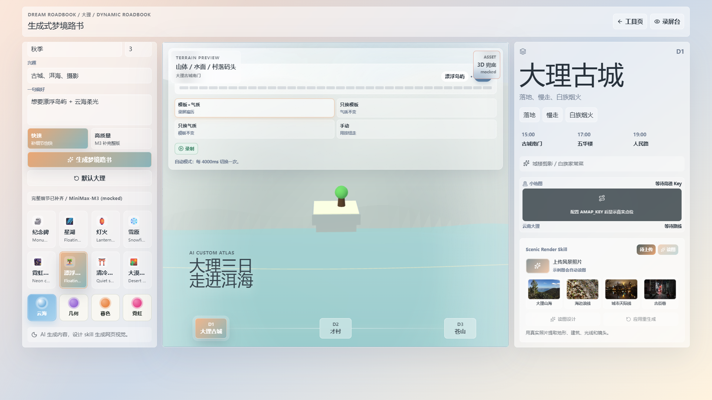
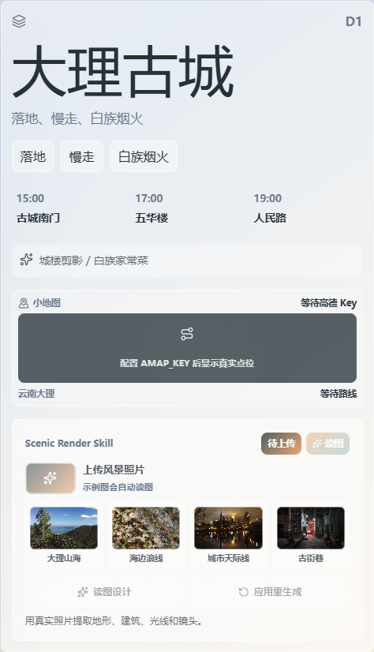
"大理 3 天 2 晚,古城 + 自然 + 摄影型" → M3 输出"落地慢走 → 洱海环线 → 苍山三塔"三段典型云南节奏。
LAMPLIGHT 模板的窄巷纵深 + 暖黄路灯 + 长阴影,把古城夜景的语言压在路书氛围里;
Day 2 的洱海骑行 + 落日机位,跟 LAMPLIGHT 模板的"暖色记忆点"形成对照。
"大理不需要堆景点,把苍山、洱海、三个时段的光线抓住,三天就能拍出一年的朋友圈。"